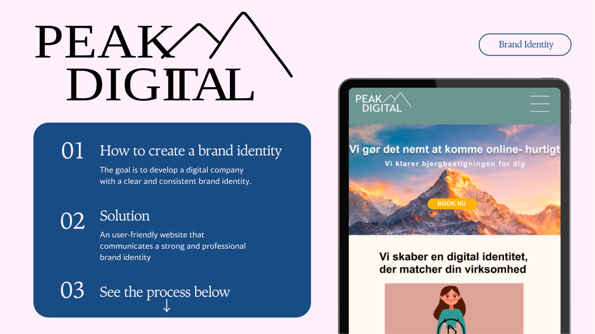
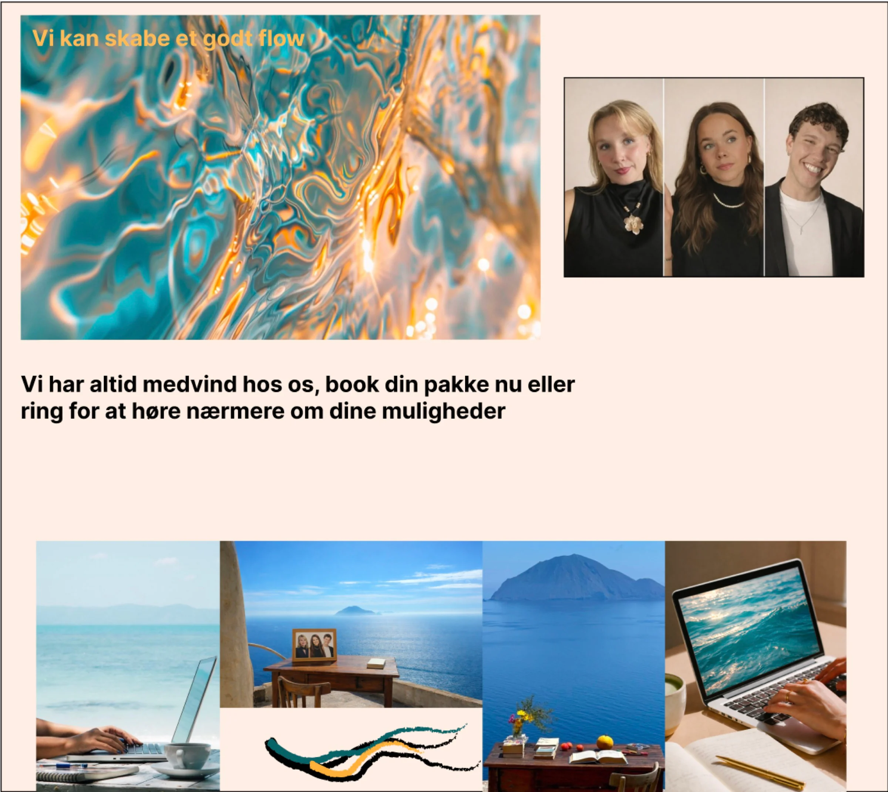
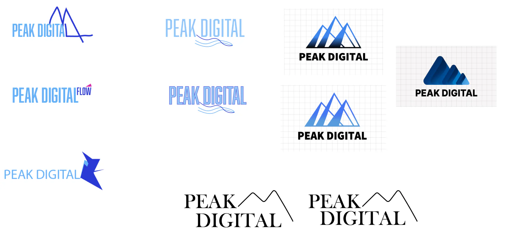
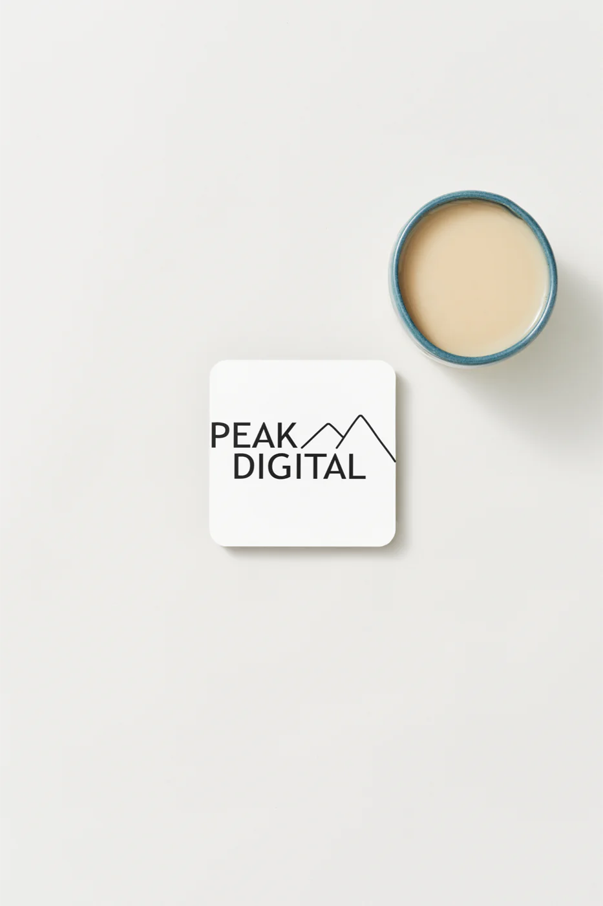
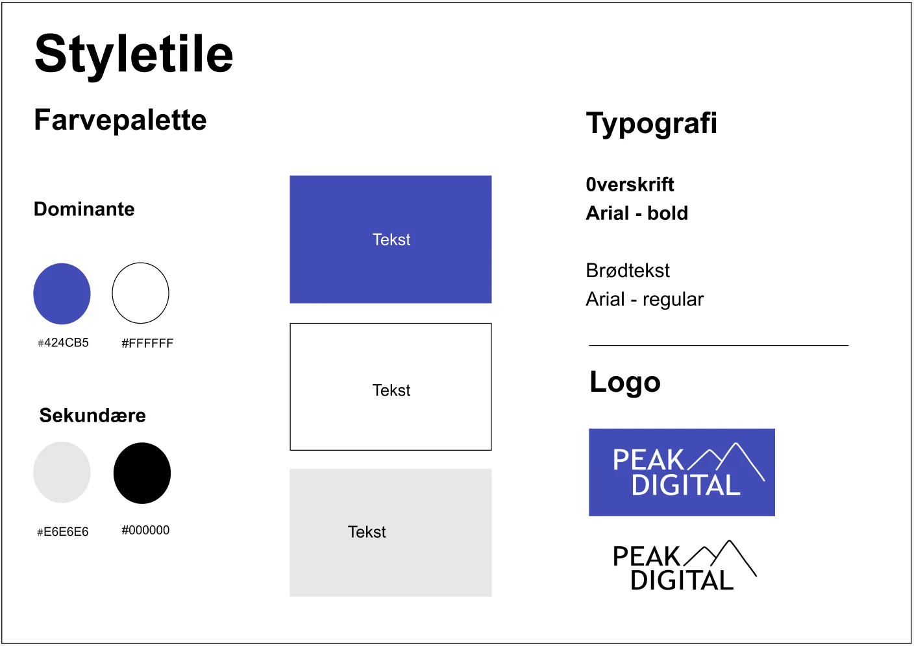
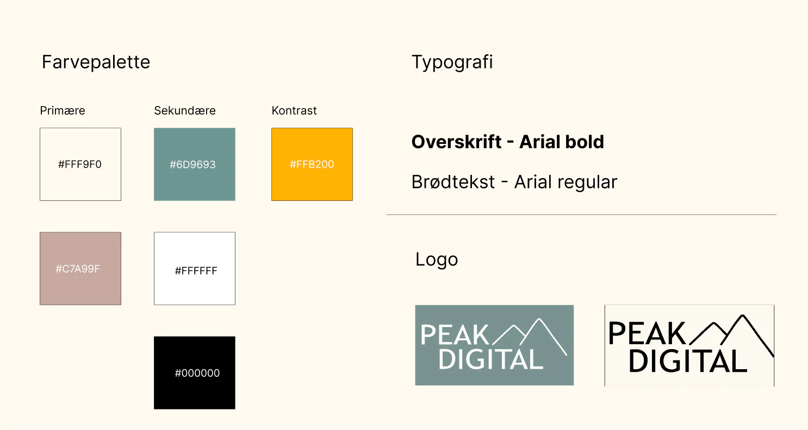
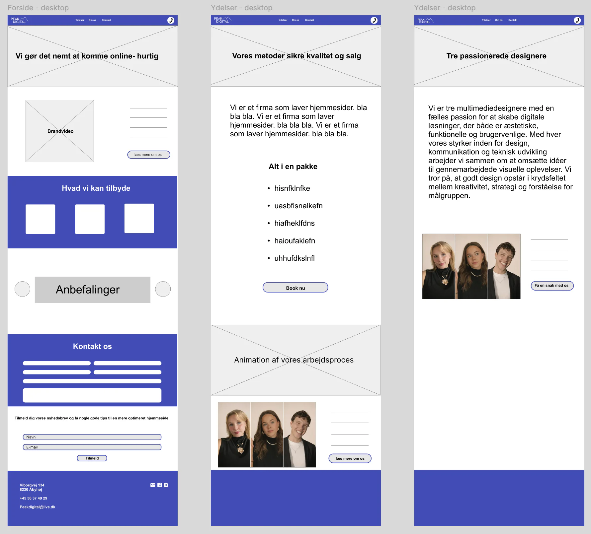
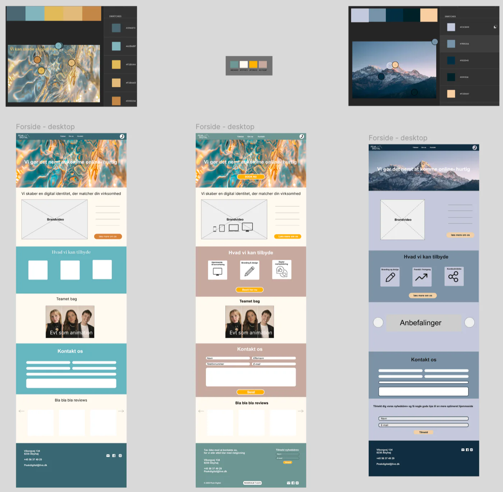
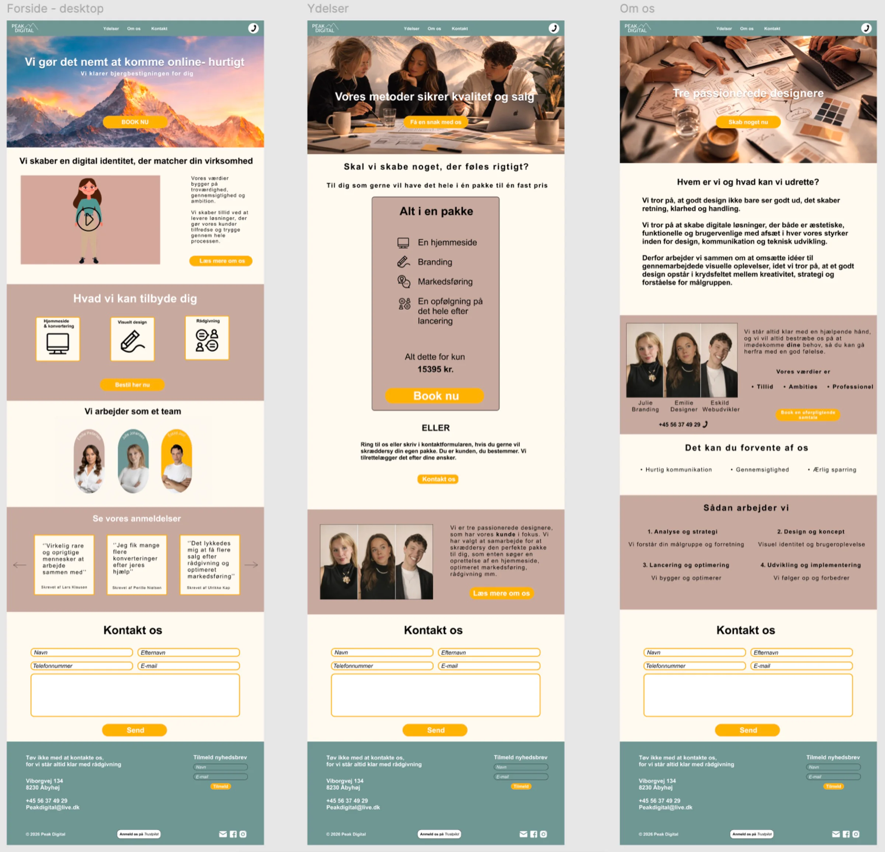
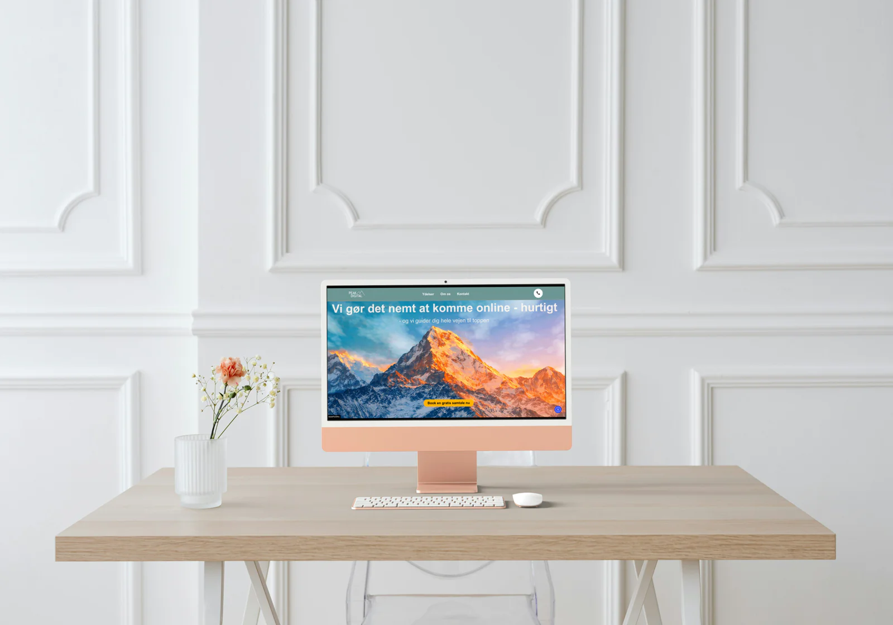

Peak Digital — Brand Identity
A branding project focused on creating a clear visual identity and a professional expression.

RESEARCH AND VISUALISATION
The target group consists of newly established independent businesses in Denmark that lack the time and resources to develop and maintain a strong online presence.
Then a moodboard were created to develop a design direction for the brand.

LOGO
The design process began by exploring minimal and structured visual styles. The focus was on creating a clean logo with strong typography and simple shapes that reflect the concept of "peak", professionalism, and trust.

The final logo combines simplicity and strong visual recognition, supporting the brand's professional identity.

STYLETILES
Throughout the process, the color palette was continuously refined to achieve a more cohesive and professional look without being boring.


WIREFRAMES
Different layouts and color variations were explored before choosing the final direction.


FINAL PROTOTYPE
The final prototype brings the visual identity into a complete website design. It shows how the colors, typography and imagery work together across the homepage, services and about pages to create a clear and welcoming experience.

RESULT
The final result is a clean and user-friendly website that communicates a strong and professional brand identity, with a focus on simplicity and intuitive user experience.
